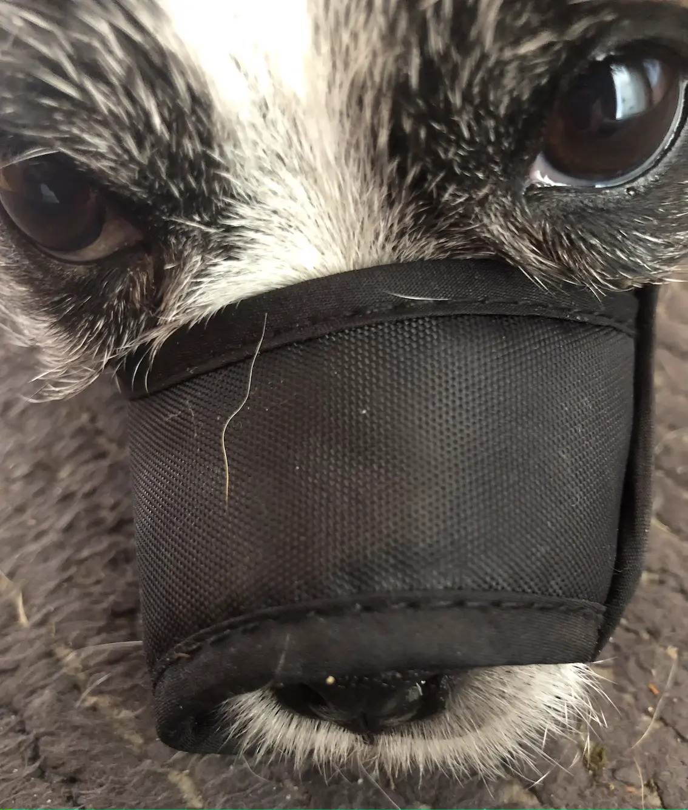

(You Gotta) Fight For Your Right (To Party)
[Kuma]: I sort of get why you both try to chase me and wouldn't be giving me a lot of loving if you ever managed to catch me. But why do I keep hearing a lot of grouching and shouts at other times?
[Jak]: Maybe it was the kids arguing...
[Nikita]: Maybe Dad stood on something...
[Kuma]: Nikki! I thought you'd got used to going outdoors.
[Nikita]: Oh yes, I like going for walks now. I can spot loads of cats. Under cars, in driveways, sitting on walls...
[Jak]: Er, no. She means going outside.
[Kuma]: You're worse at pussyfooting around things than I am! I thought Dad didn't have to deploy the poo bags inside the house any more.
[Jak]: Actually, he still has to for Noah...but, yeah, Nikki has the occasional accident.
[Kuma]: Ew! Dogs!
[Kuma]: I know you two fight. I've heard the snarls. I've had to get out of the way of humans running to break up scraps. I've seen the new head gear...
[Kuma]: Those muzzles are classy!
[Jak]: You wouldn't like wearing one.
[Kuma]: I don't need to. I'm perfectly well behaved.
[Jak]: Right. The humans suspect you of fighting too. You came home with a scratch the other day I heard.
[Kuma]: At least I don't fight with my house mates. Haven't you got used to her yet?
[Jak]: Why blame me? I'm not the one who kicks off...mostly. She gets jealous of the attention I get.
[Nikita]: I get jealous? Why...it's you who starts lunging for me...grrr...
[Jak]: You're too bouncy, pushing in everywhere, getting all the cuddles. Just cos you can jump and climb and...grrr...
[Kuma]: I'm off! Muzzles, please!